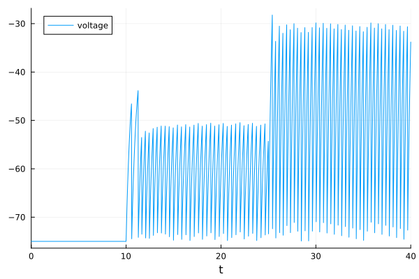
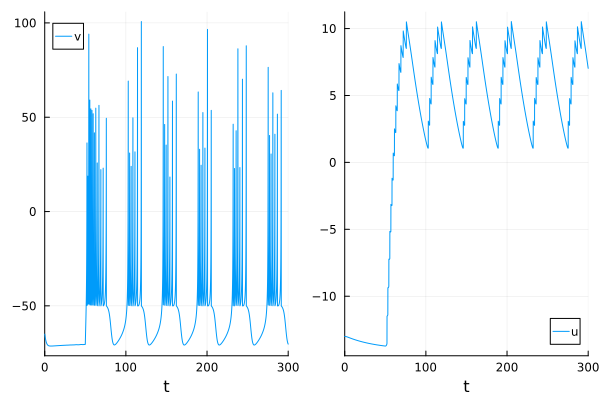
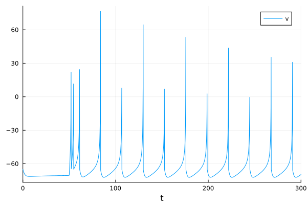
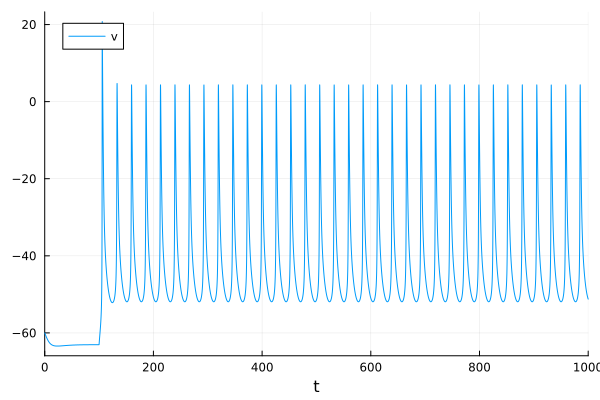
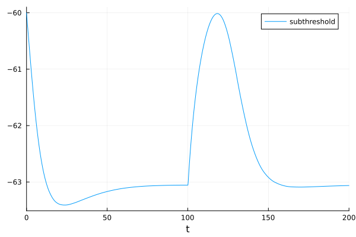
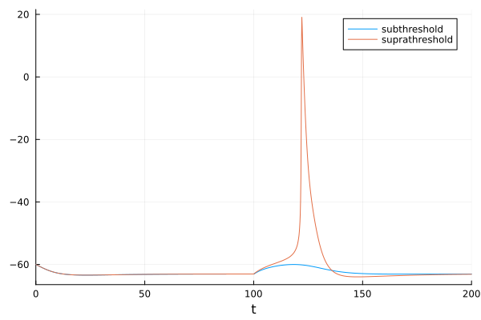
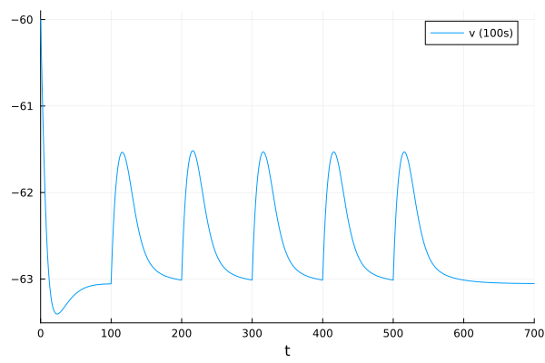
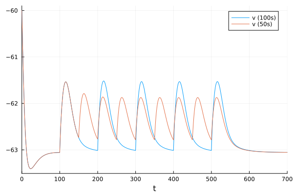
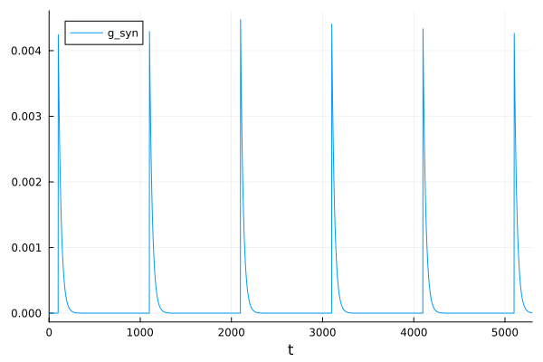
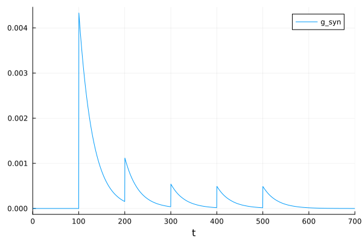

Spiking Neural Systems#
From: https://tutorials.sciml.ai/html/models/08-spiking_neural_systems.html
Neuron models of leaky integrate-and-fire (LIF), Izhikevich, and Hodgkin-Huxley.
The Leaky Integrate-and-Fire (LIF) Model#
\(C\dot{u} = -g_L (u - E_L) + I\)
\(u\): membrane potential (voltage)
\(g_L\) : leak conductance
\(I\): input current
\(E_L\): equilibrium potential
\(C\): membrane capacitance
using OrdinaryDiffEq, DiffEqCallbacks
using Plots
function lif(u, p, t)
gL, EL, C, Vth, I = p
return (-gL * (u - EL) + I) / C
end
lif (generic function with 1 method)
And when the membrane potential reaches a threshold, an action potential (spike) will occur and the membrane potential resets. The events can be described by a DiscreteCallback.
function thr_cond(u, t, integrator)
integrator.u > integrator.p[4]
end
function reset_affect!(integrator)
integrator.u = integrator.p[2]
end
threshold = DiscreteCallback(thr_cond, reset_affect!)
current_step = PresetTimeCallback([10.0, 25.0], integrator -> integrator.p[5] += 210.0)
cb = CallbackSet(current_step, threshold)
u0 = -75
tspan = (0.0, 40.0)
p = [10.0, -75.0, 5.0, -55.0, 0] ## p = (gL, EL, C, Vth, I)
prob = ODEProblem(lif, u0, tspan, p, callback=cb)
sol = solve(prob)
plot(sol, label="voltage")

The model rests at -75 mV if there is no input. At t=10 the input increases by 210 mV and the neuron starts to spike. Spiking does not start immediately because the input first has to charge the membrane capacitance. Increasing the input again at t=15 increases the spike firing rate. Note that the firing is extremely regular because LIF model is just a simple RC circuit.
The Izhikevich Model#
The Izhikevich model is a neuronal spiking model with two state variable. It can generate more complex patterns than the LIF model.
When \(v \geq\) 30 mV, \(v\) resets to \(c\), \(u\) increased by \(d\).
using OrdinaryDiffEq, DiffEqCallbacks
using Plots
In-place form of the Izhikevich Model
function izh!(du, u, p, t)
a, b, c, d, I = p
du[1] = 0.04 * u[1]^2 + 5 * u[1] + 140 - u[2] + I
du[2] = a * (b * u[1] - u[2])
end
izh! (generic function with 1 method)
Events
function thr_cond(u, t, integrator)
integrator.u[1] >= 30
end
function reset_affect!(integrator)
integrator.u[1] = integrator.p[3]
integrator.u[2] += integrator.p[4]
end
threshold = DiscreteCallback(thr_cond, reset_affect!)
current_step = PresetTimeCallback(50, integrator -> integrator.p[5] += 10)
cb = CallbackSet(current_step, threshold)
SciMLBase.CallbackSet{Tuple{}, Tuple{SciMLBase.DiscreteCallback{DiffEqCallbacks.var"#111#113"{Vector{Int64}}, Main.var"##249".var"#3#4", DiffEqCallbacks.var"#112#114"{typeof(SciMLBase.INITIALIZE_DEFAULT), Bool, Vector{Int64}, Main.var"##249".var"#3#4"}, typeof(SciMLBase.FINALIZE_DEFAULT), Nothing}, SciMLBase.DiscreteCallback{typeof(Main.var"##249".thr_cond), typeof(Main.var"##249".reset_affect!), typeof(SciMLBase.INITIALIZE_DEFAULT), typeof(SciMLBase.FINALIZE_DEFAULT), Nothing}}}((), (SciMLBase.DiscreteCallback{DiffEqCallbacks.var"#111#113"{Vector{Int64}}, Main.var"##249".var"#3#4", DiffEqCallbacks.var"#112#114"{typeof(SciMLBase.INITIALIZE_DEFAULT), Bool, Vector{Int64}, Main.var"##249".var"#3#4"}, typeof(SciMLBase.FINALIZE_DEFAULT), Nothing}(DiffEqCallbacks.var"#111#113"{Vector{Int64}}([50]), Main.var"##249".var"#3#4"(), DiffEqCallbacks.var"#112#114"{typeof(SciMLBase.INITIALIZE_DEFAULT), Bool, Vector{Int64}, Main.var"##249".var"#3#4"}(SciMLBase.INITIALIZE_DEFAULT, true, [50], Main.var"##249".var"#3#4"()), SciMLBase.FINALIZE_DEFAULT, Bool[1, 1], nothing), SciMLBase.DiscreteCallback{typeof(Main.var"##249".thr_cond), typeof(Main.var"##249".reset_affect!), typeof(SciMLBase.INITIALIZE_DEFAULT), typeof(SciMLBase.FINALIZE_DEFAULT), Nothing}(Main.var"##249".thr_cond, Main.var"##249".reset_affect!, SciMLBase.INITIALIZE_DEFAULT, SciMLBase.FINALIZE_DEFAULT, Bool[1, 1], nothing)))
Setup problem
p = [0.02, 0.2, -50, 2, 0]
u0 = [-65, p[2] * -65]
tspan = (0.0, 300)
prob = ODEProblem(izh!, u0, tspan, p, callback=cb)
ODEProblem with uType Vector{Float64} and tType Float64. In-place: true
Non-trivial mass matrix: false
timespan: (0.0, 300.0)
u0: 2-element Vector{Float64}:
-65.0
-13.0
solution
sol = solve(prob)
p1 = plot(sol, idxs=1, label="v");
p2 = plot(sol, idxs=2, label="u");
plot(p1, p2)

Changing parameters alters spiking patterns.
p = [0.02, 0.2, -65, 8, 0]
u0 = [-65, p[2] * -65]
tspan = (0.0, 300)
prob = ODEProblem(izh!, u0, tspan, p, callback=cb)
sol = solve(prob)
plot(sol, idxs=1, label="v")

Hodgkin-Huxley Model#
The Hodgkin-Huxley (HH) model is a biophysically realistic neuron model. All parameters and mechanisms of the model represent biological mechanisms. Opening and closing of sodium and potassium channels depolarize and hyperpolarize the membrane potential.
using OrdinaryDiffEq, DiffEqCallbacks
using Plots
Potassium ion-channel rate functions
alpha_n(v) = (0.02 * (v - 25.0)) / (1.0 - exp((-1.0 * (v - 25.0)) / 9.0))
beta_n(v) = (-0.002 * (v - 25.0)) / (1.0 - exp((v - 25.0) / 9.0))
beta_n (generic function with 1 method)
Sodium ion-channel rate functions
alpha_m(v) = (0.182 * (v + 35.0)) / (1.0 - exp((-1.0 * (v + 35.0)) / 9.0))
beta_m(v) = (-0.124 * (v + 35.0)) / (1.0 - exp((v + 35.0) / 9.0))
alpha_h(v) = 0.25 * exp((-1.0 * (v + 90.0)) / 12.0)
beta_h(v) = (0.25 * exp((v + 62.0) / 6.0)) / exp((v + 90.0) / 12.0)
function HH!(du, u, p, t)
gK, gNa, gL, EK, ENa, EL, C, I = p
v, n, m, h = u
du[1] = (-(gK * (n^4.0) * (v - EK)) - (gNa * (m^3.0) * h * (v - ENa)) - (gL * (v - EL)) + I) / C
du[2] = (alpha_n(v) * (1.0 - n)) - (beta_n(v) * n)
du[3] = (alpha_m(v) * (1.0 - m)) - (beta_m(v) * m)
du[4] = (alpha_h(v) * (1.0 - h)) - (beta_h(v) * h)
end
current_step = PresetTimeCallback(100, integrator -> integrator.p[8] += 1)
SciMLBase.DiscreteCallback{DiffEqCallbacks.var"#111#113"{Vector{Int64}}, Main.var"##249".var"#5#6", DiffEqCallbacks.var"#112#114"{typeof(SciMLBase.INITIALIZE_DEFAULT), Bool, Vector{Int64}, Main.var"##249".var"#5#6"}, typeof(SciMLBase.FINALIZE_DEFAULT), Nothing}(DiffEqCallbacks.var"#111#113"{Vector{Int64}}([100]), Main.var"##249".var"#5#6"(), DiffEqCallbacks.var"#112#114"{typeof(SciMLBase.INITIALIZE_DEFAULT), Bool, Vector{Int64}, Main.var"##249".var"#5#6"}(SciMLBase.INITIALIZE_DEFAULT, true, [100], Main.var"##249".var"#5#6"()), SciMLBase.FINALIZE_DEFAULT, Bool[1, 1], nothing)
steady-states of n, m, and h
n_inf(v) = alpha_n(v) / (alpha_n(v) + beta_n(v))
m_inf(v) = alpha_m(v) / (alpha_m(v) + beta_m(v))
h_inf(v) = alpha_h(v) / (alpha_h(v) + beta_h(v))
h_inf (generic function with 1 method)
Parameters: gK, gNa, gL, EK, ENa, EL, C, I
p = [35.0, 40.0, 0.3, -77.0, 55.0, -65.0, 1, 0]
u0 = [-60, n_inf(-60), m_inf(-60), h_inf(-60)]
tspan = (0.0, 1000.0)
prob = ODEProblem(HH!, u0, tspan, p, callback=current_step)
sol = solve(prob)
plot(sol, idxs=1, label="v")

Alpha Synapse#
One of the most simple synaptic mechanisms used in computational neuroscience is the alpha synapse. When this mechanism is triggered, it causes an instantaneous rise in conductance followed by an exponential decay.
using OrdinaryDiffEq, DiffEqCallbacks
using Plots
function HH_syn!(du, u, p, t)
gK, gNa, gL, EK, ENa, EL, C, I, max_gSyn, ESyn, tau, tf = p
v, n, m, h = u
gSyn(max_gsyn, tau, tf, t) = ifelse(t - tf >= 0, max_gsyn * exp(-(t - tf) / tau), 0.0)
ISyn = gSyn(max_gSyn, tau, tf, t) * (v - ESyn)
du[1] = (-(gK * (n^4.0) * (v - EK)) - (gNa * (m^3.0) * h * (v - ENa)) - (gL * (v - EL)) + I - ISyn) / C
du[2] = (alpha_n(v) * (1.0 - n)) - (beta_n(v) * n)
du[3] = (alpha_m(v) * (1.0 - m)) - (beta_m(v) * m)
du[4] = (alpha_h(v) * (1.0 - h)) - (beta_h(v) * h)
end
HH_syn! (generic function with 1 method)
parameters are gK, gNa, gL, EK, ENa, EL, C, I, max_gSyn, ESyn, tau, tf
p = [35.0, 40.0, 0.3, -77.0, 55.0, -65.0, 1, 0, 0.008, 0, 20, 100]
tspan = (0.0, 200.0)
prob = ODEProblem(HH_syn!, u0, tspan, p)
sol = solve(prob)
fig = plot(sol, idxs=1, label="subthreshold")

Subthreshold excitatory postsynaptic potential (EPSP) (blue) vs suprathreshold EPSP (orange).
sol2 = solve(remake(prob, p=[35.0, 40.0, 0.3, -77.0, 55.0, -65.0, 1, 0, 0.01, 0, 20, 100]))
plot!(fig, sol2, idxs=1, label="suprathreshold")

Tsodyks-Markram Synapse#
The Tsodyks-Markram synapse (TMS) is a dynamic system that models the changes of maximum conductance that occur between EPSPs at different firing frequencies.
using OrdinaryDiffEq, DiffEqCallbacks
using Plots
function HH_tms!(du, u, p, t)
gK, gNa, gL, EK, ENa, EL, C, I, tau, tau_u, tau_R, u0, gmax, Esyn = p
v, n, m, h, u, R, gsyn = u
du[1] = ((gK * (n^4.0) * (EK - v)) + (gNa * (m^3.0) * h * (ENa - v)) + (gL * (EL - v)) + I + gsyn * (Esyn - v)) / C
du[2] = (alpha_n(v) * (1.0 - n)) - (beta_n(v) * n)
du[3] = (alpha_m(v) * (1.0 - m)) - (beta_m(v) * m)
du[4] = (alpha_h(v) * (1.0 - h)) - (beta_h(v) * h)
# Synaptic variables
du[5] = -(u / tau_u)
du[6] = (1 - R) / tau_R
du[7] = -(gsyn / tau)
end
function epsp!(integrator)
integrator.u[5] += integrator.p[12] * (1 - integrator.u[5])
integrator.u[7] += integrator.p[13] * integrator.u[5] * integrator.u[6]
integrator.u[6] -= integrator.u[5] * integrator.u[6]
end
epsp_ts = PresetTimeCallback(100:100:500, epsp!)
SciMLBase.DiscreteCallback{DiffEqCallbacks.var"#111#113"{StepRange{Int64, Int64}}, typeof(Main.var"##249".epsp!), DiffEqCallbacks.var"#112#114"{typeof(SciMLBase.INITIALIZE_DEFAULT), Bool, StepRange{Int64, Int64}, typeof(Main.var"##249".epsp!)}, typeof(SciMLBase.FINALIZE_DEFAULT), Nothing}(DiffEqCallbacks.var"#111#113"{StepRange{Int64, Int64}}(100:100:500), Main.var"##249".epsp!, DiffEqCallbacks.var"#112#114"{typeof(SciMLBase.INITIALIZE_DEFAULT), Bool, StepRange{Int64, Int64}, typeof(Main.var"##249".epsp!)}(SciMLBase.INITIALIZE_DEFAULT, true, 100:100:500, Main.var"##249".epsp!), SciMLBase.FINALIZE_DEFAULT, Bool[1, 1], nothing)
parameters are gK, gNa, gL, EK, ENa, EL, C, I, tau, tau_u, tau_R, u0, gmax, Esyn
p = [35.0, 40.0, 0.3, -77.0, 55.0, -65.0, 1, 0, 30, 1000, 50, 0.5, 0.005, 0]
u0 = [-60, n_inf(-60), m_inf(-60), h_inf(-60), 0.0, 1.0, 0.0]
tspan = (0.0, 700.0)
prob = ODEProblem(HH_tms!, u0, tspan, p, callback=epsp_ts)
sol = solve(prob)
fig = plot(sol, idxs=1, label="v (100s)");
fig

prob2 = ODEProblem(HH_tms!, u0, tspan, p, callback=PresetTimeCallback(100:50:500, epsp!))
sol2 = solve(prob2)
plot!(fig, sol2, idxs=1, label="v (50s)")
fig

If we increase the period between these events, facilitation does not occur.
p = [35.0, 40.0, 0.3, -77.0, 55.0, -65.0, 1, 0, 30, 500, 50, 0.5, 0.005, 0]
u0 = [-60, n_inf(-60), m_inf(-60), h_inf(-60), 0.0, 1.0, 0.0]
tspan = (0.0, 5300.0)
prob = ODEProblem(HH_tms!, u0, tspan, p, callback=PresetTimeCallback(100:1000:5100, epsp!))
sol = solve(prob)
plot(sol, idxs=7, label="g_syn")

We can also change these time constants such that the dynamics show short-term depression instead of facilitation.
epsp_ts = PresetTimeCallback(100:100:500, epsp!)
p = [35.0, 40.0, 0.3, -77.0, 55.0, -65.0, 1, 0, 30, 100, 1000, 0.5, 0.005, 0]
u0 = [-60, n_inf(-60), m_inf(-60), h_inf(-60), 0.0, 1.0, 0.0]
tspan = (0.0, 700.0)
prob = ODEProblem(HH_tms!, u0, tspan, p, callback=epsp_ts)
sol = solve(prob)
plot(sol, idxs=7, label="g_syn")

This notebook was generated using Literate.jl.